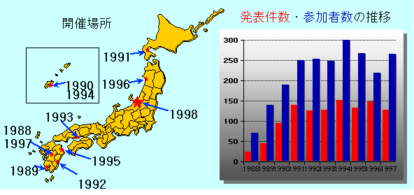

SWoPP の歩み
Last Update:98/04/14

これまで，夏に，九州・北海道を舞台に10回"並列/分散/協調処理"をテーマとした
以下の研究会を開催し，大きな成果を挙げて参りました．
1. 1988年並列処理に関する『火の国』ミニシンポジウム
- 1988年8月4日(木)-5 日(金) グリーンピア南阿蘇(熊本県)
- 電子情報通信学会コンピュータシステム研究会
- 発表件数24
- 参加者数70
2. 1989年並列処理に関する『指宿』ミニシンポジウム
- 1989 年8 月3 日(木)-5 日(土) グリーンピア指宿(鹿児島県)
- 電子情報通信学会コンピュータシステム研究会
- 発表件数44
- 参加者数140
3. 1990年並列処理に関する『琉球』サマー・ワークショップ(SWoPP 琉球'90)
- 1990 年7 月18 日(水)-20 日(金) 沖縄残波岬ロイヤルホテル(沖縄県)
- 電子情報通信学会コンピュータシステム研究会
- 情報処理学会計算機アーキテクチャ研究会
- 発表件数94
- 参加者数190
4. 1991年並列/分散/協調処理に関する『大沼』サマー・ワークショップ
(SWoPP大沼'91)
- 1991年7月16日(火)-19日(金) 函館プリンスホテル(北海道)
- 電子情報通信学会コンピュータシステム研究会
- 情報処理学会数値解析研究会，プログラミング−言語・基礎・実践−研究会
人工知能研究会，オペレ−ティング・システム研究会，
計算機アーキテクチャ研究会
- 発表件数139
- 参加者数250
5. 1992年並列/分散/協調処理に関する『日向灘』サマー・ワークショップ
(SWoPP日向灘'92)
- 1992年8月19日(水)-21日(金) シーサイドホテルフェニックス(宮崎市)
- 電子情報通信学会コンピュータシステム研究会，人工知能と知識処理*研究会
ウェーハスケール集積システム研究会
- 情報処理学会数値解析研究会，プログラミング−言語・基礎・実践−研究会
人工知能研究会，オペレ−ティング・システム研究会
計算機アーキテクチャ研究会
- 人工知能学会知識ベースシステム研究会
- 発表件数126
- 参加者数254
- プログラム(dvi形式, ps形式)
6. 1993年並列/分散/協調処理に関する『鞆の浦』サマー・ワークショップ
(SWoPP 鞆の浦'93)
- 1993年8月18日(水)-20日(金) 鞆シーサイドホテル(広島県)
- 電子情報通信学会コンピュータシステム研究会，
フォールトトレラントシステム研究会
- 情報処理学会人工知能研究会，アルゴリズム研究会
計算機アーキテクチャ研究会，プログラミング−言語・基礎・実践−研究会
ハイパフォーマンスコンピューティング研究会
システムソフトウェアとオペレ−ティング・システム研究会
- 発表件数127
- 参加者数248
- プログラム(dvi形式, ps形式)
- 発表募集案内(dvi形式, ps形式)
- 参加案内(dvi形式, ps形式)
7. 1994年並列/分散/協調処理に関する『琉球』サマー・ワークショップ
（SWoPP 琉球'94）
- 1994年7月21日(木)-23日(土) ホテル西武オリオン（沖縄県那覇市）
- 電子情報通信学会人工知能と知識処理研究会,
コンピュータシステム研究会,
フォールトトレラントシステム研究会,
WSI技術とその応用システム研究会,
- 情報処理学会人工知能研究会,
計算機アーキテクチャ研究会,
プログラミング-言語・基礎・実践-研究会,
ハイパフォーマンスコンピューティング研究会,
システムソフトウエアとオペレーティング・システム研究会
- 発表件数152（34大学、11企業、2国立機関）
- 参加者数300（46大学205名、25企業80名、2国立機関15名）詳細
- プログラム(dvi形式, ps形式)
- 発表募集案内(dvi形式, ps形式)
- 参加案内(dvi形式, ps形式)
- 1995年8月22日(火)-25日(金) 別府コンベンションセンター（大分県別府市）
- 電子情報通信学会/人工知能と知識処理研究会,
コンピュータシステム研究会,
フォールトトレラントシステム研究会
- 情報処理学会/
計算機アーキテクチャ研究会,
プログラミング研究会,
ハイパフォーマンスコンピューティング研究会,
システムソフトウエアとオペレーティング・システム研究会
- 発表件数133（33大学、7企業、2国立機関）
- 参加者数267（43大学208名、16企業45名、4国立機関14名）詳細
- プログラム(dvi形式, ps形式)
- 発表募集案内(dvi形式, ps形式)
- 参加案内(dvi形式, ps形式)
- 1996年8月26日(月)-29日(木) 秋田県総合生活文化会館『アトリオン』（秋田県秋田市）
- 電子情報通信学会/
コンピュータシステム研究会,
フォールトトレラントシステム研究会
- 情報処理学会/
人工知能研究会,
計算機アーキテクチャ研究会,
プログラミング研究会,
ハイパフォーマンスコンピューティング研究会,
システムソフトウエアとオペレーティング・システム研究会
- 発表件数149（110件大学、21件企業、18件国立機関）
- 参加者数219（31大学160名、20企業35名、3研究機関24名）詳細
- プログラム(dvi形式, ps形式)
- 発表募集案内(dvi形式, ps形式)
- 参加案内(dvi形式, ps形式)
- 1996年8月19日(火)-22日(金) グリーンピア南阿蘇（熊本県阿蘇郡久木野村）
- 電子情報通信学会/
コンピュータシステム研究会(CPSY),
フォールトトレラントシステム研究会(FTS)
- 情報処理学会/
計算機アーキテクチャ研究会(ARC),
プログラミング研究会(PRO),
ハイパフォーマンスコンピューティング研究会(HPC),
システムソフトウエアとオペレーティング・システム研究会(OS)
- 発表件数127（97件大学、14件企業、16件国立機関他）
- 参加者数265（45大学202名、11企業36名、4国立研究機関他27名）詳細
(GIF)
(エクセル形式のファイル)
(TEXT)
- プログラム(dvi形式, ps形式)
- 発表募集案内(dvi形式, ps形式)
- 参加案内(dvi形式, ps形式)
SWoPP Page / From 98.4 Hiromitsu TAKAGI / takagi@etl.go.jp
SWoPP Page / Until 98.4 Hayato YAMANA / yamana@etl.go.jp
{kind=link}